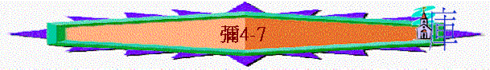

一.
3.萬民的不義(4-5)
A.理想的國度
a.神殿被高舉
「末後的日子，耶和華殿的山必堅立，超乎諸山，高舉過於萬嶺；萬民都要流歸這山。」彌
4:1
～「末後的日子」應指將來主再來的時候，「耶和華殿的山」應是末後的耶路撒冷，那時萬民也要來到神的殿。
b.萬民敬拜神
「必有許多國的民前往，說：來吧，我們登耶和華的山，奔雅各神的殿。主必將他的道教訓我們；我們也要行他的路。因為訓誨必出於錫安；耶和華的言語必出於耶路撒冷。」彌
4:2
～萬民也要敬拜神，聆聽神的話。
c.神道必傳開
d.真神施審判
「他必在多國的民中施行審判，為遠方強盛的國斷定是非。他們要將刀打成犁頭，把槍打成鐮刀。這國不舉刀攻擊那國；他們也不再學習戰事。」彌
4:3
e.列國得和平
「人人都要坐在自己葡萄樹下和無花果樹下，無人驚嚇。這是萬軍之耶和華親口說的。」4:4
～兵器也變作農業互具，人沒有驚嚇的事，因遍地也滿和平。
f.王權歸於神
「我必使瘸腿的為餘剩之民，使趕到遠方的為強盛之民。耶和華要在錫安山作王治理他們，從今直到永遠。」彌
4:7
B.不義的萬民
a.敬拜假神
「萬民各奉己神的名而行；我們卻永永遠遠奉耶和華我們神的名而行。」彌
4:5
b.攻擊選民
「現在有許多國的民聚集攻擊你，說：願錫安被玷污！願我們親眼見他遭報！」彌
4:11
～仇敵一真敵視以色列，常想選民被擊倒。
C.公義的作為
a.關乎選民
(1)得拯救
(A)被帶至巴比倫
「錫安的民（原文作女子）哪，你要疼痛劬勞，彷彿產難的婦人；因為你必從城裡出來，住在田野，到巴比倫去。在那裡要蒙解救；在那裡耶和華必救贖你脫離仇敵的手。」彌
4:10
～昔日耶利米曾叫選民向巴比倫投降，因被帶至巴比倫，其實才可得平安。
(B)基督的親降臨
(a)在伯利恆降生
「伯利恆、以法他啊，你在猶大諸城中為小，將來必有一位從你那裡出來，在以色列中為我作掌權的；他的根源從亙古，從太初就有。」彌
5:2
～伯利恆舊稱，基督在此地方誕生
(b)靠神大能牧養
「他必起來，倚靠耶和華的大能，並耶和華他神之名的威嚴，牧養他的羊群。他們要安然居住；因為他必日見尊大，直到地極。」彌
5:4
(C)脫離亞述壓迫
「他們必用刀劍毀壞亞述地和寧錄地的關口。亞述人進入我們的地境踐踏的時候，他必拯救我們。」彌
5:6
(2)得潔淨
「耶和華說：到那日，我必從你中間剪除馬匹，毀壞車輛，也必從你國中除滅城邑，拆毀一切的保障，又必除掉你手中的邪術；你那裡也不再有占卜的。」彌
5:10-12
b.關乎仇敵
(1)被聖民打醉
「錫安的民（原文作女子）哪，起來踹穀吧！我必使你的角成為鐵，使你的蹄成為銅。你必打碎多國的民，將他們的財獻與耶和華，將他們的貨獻與普天下的主。」彌
4:13
～牛是用蹄踹穀的，以色列如牛用銅的蹄踐踏仇敵，更奪去他們凡財物，獻與普天下的主。
(2)遭神所審判
「我也必在怒氣和忿怒中向那不聽從的列國施報。」彌
5:15
4.選民的不義(6:1-7:6)-
A.神賜下恩典
「我的百姓啊，我向你做了什麼呢？我在什麼事上使你厭煩？你可以對我證明。」彌
6:3
a.選召
「我曾將你從埃及地領出來，從作奴僕之家救贖你；我也差遣摩西、亞倫，和米利暗在你前面行。」彌
6:4
b.帶領
～神用摩西、亞倫，和米利暗帶領選民出埃及，越曠野。
c.保守
「我的百姓啊，你們當追念摩押王巴勒所設的謀和比珥的兒子巴蘭回答他的話，並你們從什亭到吉甲所遇見的事，好使你們知道耶和華公義的作為。」彌
6:5
～昔日巴勒請巴蘭咒詛選民，巴蘭也用計謀引誘選民在什亭犯罪，但至終神有保守，將咒詛化為祝福，在犯罪中顯公義作為，至於保守他們不致被擊倒。
B.他們種下惡行
a.神的期望
「耶和華豈喜悅千千的公羊，或是萬萬的油河嗎？我豈可為自己的罪過獻我的長子嗎？為心中的罪惡獻我身所生的嗎？世人哪，耶和華已指示你何為善。他向你所要的是什麼呢？只要你行公義，好憐憫，存謙卑的心，與你的神同行。」彌
6:7-8
～不是要他們獻上很多很多的祭，而是他們在生命及行為上能行公義，好憐憫，存謙卑的心，與神同行。
b.人的惡行
(1)惡之質
(A)不公義
「惡人家中不仍有非義之財和可惡的小升斗嗎？我若用不公道的天平和囊中詭詐的法碼，豈可算為清潔呢？」彌
6:10-11
～「可惡的小升斗」指不足斤兩的秤，「不公道的天平」指不準確的天平，「囊中詭詐的法碼」指用兩樣的法碼。
(B)沒憐憫
「城裡的富戶滿行強暴；其中的居民也說謊言，口中的舌頭是詭詐的。」彌
6:12
～他們沒有憐憫貧窮人，反用強暴、用詭詐奪去他們的剩餘。
(C)與惡同行
「因為你守暗利的惡規，行亞哈家一切所行的，順從他們的計謀；因此，我必使你荒涼，使你的居民令人嗤笑，你們也必擔當我民的羞辱。」彌
6:16
「暗利行耶和華眼中看為惡的事，比他以前的列王作惡更甚。因他行了尼八的兒子耶羅波安所行的，犯他使以色列人陷在罪裡的那罪，以虛無的神惹耶和華以色列神的怒氣。」王上
16:25
「暗利的兒子亞哈行耶和華眼中看為惡的事，比他以前的列王更甚，犯了尼八的兒子耶羅波安所犯的罪；他還以為輕，又娶了西頓王謁巴力的女兒耶洗別為妻，去事奉敬拜巴力，」王上
16:30-31
～他們行列祖暗利及亞哈的惡行（可能指敬拜偶像）
(2)惡之量
(A)世間沒正直人
「地上虔誠人滅盡；世間沒有正直人；各人埋伏，要殺人流血，都用網羅獵取弟兄。」彌
7:2
(B)家內沒可信者
「不要倚賴鄰舍；不要信靠密友。要守住你的口；不要向你懷中的妻提說。因為，兒子藐視父親；女兒抗拒母親；媳婦抗拒婆婆；人的仇敵就是自己家裡的人。」彌
7:5-6
～鄰舍、密友、妻、父、子、女、媳婦、婆婆也互相為敵，彼此不可信靠，証明在以色列地已充滿惡人、惡事，在家中也找不到良善。
C.至終遭神報應
a.遭荒涼
「你必撒種，卻不得收割；踹橄欖，卻不得油抹身；踹葡萄，卻不得酒喝。」彌
6:15
b.遭恥笑
「因為你守暗利的惡規，行亞哈家一切所行的，順從他們的計謀；因此，我必使你荒涼，使你的居民令人嗤笑，你們也必擔當我民的羞辱。」彌
6:16
c.遭降罰
「他們最好的，不過是蒺藜；最正直的，不過是荊棘籬笆。你守望者說，降罰的日子已經來到。他們必擾亂不安。」彌
7:4
二.先知的持守與神的恩典(7:7-20)
1.先知的持守
A.堅持
a.仰望神
「至於我，我要仰望耶和華，要等候那救我的神；我的神必應允我。」彌
7:7
b.等候神
c.要起來
「我的仇敵啊，不要向我誇耀。我雖跌倒，卻要起來；我雖坐在黑暗裡，耶和華卻作我的光。」彌
7:8
B.信念
a.神必應允
「至於我，我要仰望耶和華，要等候那救我的神；我的神必應允我。」彌
7:7
b.神必伸冤
「我要忍受耶和華的惱怒；因我得罪了他，直等他為我辨屈，為我伸冤。他必領我到光明中；我必得見他的公義。那時我的仇敵，就是曾對我說「耶和華你神在那裡」的，他一看見這事就被羞愧遮蓋。我必親眼見他遭報；他必被踐踏，如同街上的泥土。」彌
7:9-10
～「踐踏」當時的勝利者會用腳踏在人的頸項上，表示勝利！
c.神必復興
「以色列啊，日子必到，你的牆垣必重修；到那日，你的境界必開展（或作：命令必傳到遠方）。」彌
7:11
C.願望
「求耶和華在迦密山的樹林中，用你的杖牧放你獨居的民，就是你產業的羊群。求你容他們在巴珊和基列得食物，像古時一樣。」彌
7:14
～巴珊和基列在約旦河東面，以肥沃的草地稱著。
a.求神牧養
b.求得食物
2.真神的恩典
A.神顯奇事
「耶和華說：我要把奇事顯給他們看，好像出埃及地的時候一樣。列國看見這事就必為自己的勢力慚愧；他們必用手摀口，掩耳不聽。」彌
7:15-16
B.神必赦免